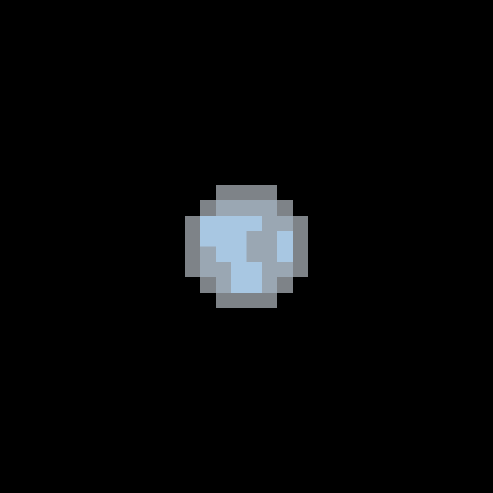

OGLE-2005-BLG-390Lb (som har smeknamnet Hoth) är en jordlik planet som har 5,5 gånger så stor massa som jorden. Hoth är anmärkningsvärd eftersom den är så liten samt för att vara så långt från sin stjärna.
Vi vet inte helt fullständigt om Hoth till mestadels består av sten eller gas. Om den är gjord av sten är det troligt att på ytan finns det fast formar av vatten, ammoniak, metan och kväve, ämnen som vore flytande eller i gasform på jorden.